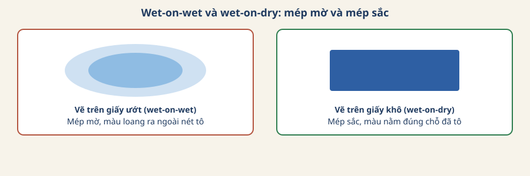

Vẽ trên giấy khô (wet-on-dry): nét sắc, chồng lớp, chi tiết
Tác giả: Nguyễn Trung Đức
Chuyên mục: Kỹ thuật cơ bản — Cập nhật: 26/11/2026
Bạn đã học loang màu ướt trên ướt ở bài kỹ thuật loang màu: màu chảy mềm, mép mờ, hợp vẽ bầu trời và nước. Nhưng một bức vẽ chỉ có mép mờ sẽ thiếu điểm nhấn. Bạn cần nét sắc để vẽ cành cây, mắt, cửa sổ, chữ viết và mọi chi tiết nhỏ. Kỹ thuật vẽ trên giấy khô, gọi là wet-on-dry, là cách bạn tô màu ướt lên giấy khô. Màu chỉ chảy tới chỗ cọ chạm vào, mép nét sắc và rõ, bạn kiểm soát được từng nét. Bài này dạy bạn cách tô trên giấy khô, cách chồng lớp trong suốt, và cách vẽ chi tiết mà không làm hỏng lớp màu bên dưới. Bài này dùng đúng bộ đồ tối thiểu ở bài bộ đồ: giấy 300 gsm cold press, cọ tròn cỡ 8 và cỡ 4, hộp pan 12 màu.

Nét bên trái loang trên giấy ướt, mép mờ; nét bên phải vẽ trên giấy khô, mép sắc và rõ.
Wet-on-dry là gì, khác wet-on-wet ở điểm nào
Wet-on-dry nghĩa là bạn tô màu ướt lên giấy khô. Louise De Masi viết rằng đây là kỹ thuật nền tảng của màu nước, dùng để vẽ đường nét chính xác, vân và chi tiết, vì nó cho bạn kiểm soát màu tốt hơn và ngăn màu chảy lan ra ngoài. MyArtAspirations cũng viết rằng khi vẽ trên giấy khô, sắc tố chỉ chảy tới chỗ cọ đưa độ ẩm tới, nên bạn kiểm soát được màu đi đâu, và khi màu khô sẽ tạo thành mép cứng rõ ràng.
Điểm khác nhau cốt lõi nằm ở mép nét vẽ. Vẽ trên giấy ướt cho mép mềm, màu loang và hòa vào nhau. Vẽ trên giấy khô cho mép cứng, sắc nét, màu nằm đúng chỗ bạn tô. De Masi viết rằng một bức tranh màu nước thành công cần cả hai loại mép: mép mềm thường vẽ trên giấy ướt, mép cứng vẽ trên giấy khô. Bạn không chọn một kỹ thuật rồi bỏ kỹ thuật còn lại. Bạn vẽ nền trời bằng wet-on-wet, rồi đợi khô hẳn, rồi vẽ cành cây, mái nhà và chi tiết bằng wet-on-dry lên trên.
Wet-on-dry còn là kỹ thuật duy nhất cho phép bạn chồng lớp. Bạn tô một lớp màu, đợi khô hoàn toàn, rồi tô lớp khác lên trên. Lớp dưới không bị xáo trộn, vì giấy đã khô. Bài chồng lớp trong suốt (glazing) trong website này sẽ dạy riêng kỹ thuật chồng lớp, còn bài này dạy bạn nền tảng: làm sao tô trên giấy khô cho đều, cho sắc, và không làm hỏng lớp dưới.
Chuẩn bị: cọ ướt bao nhiêu, màu đặc bao nhiêu
Bạn chuẩn bị giống như khi vẽ loang màu, nhưng có hai điểm khác: cọ và độ đặc của màu.
Cọ ướt bao nhiêu. De Masi khuyên bạn dùng cọ ướt nhưng không nhỏ giọt. Bạn nhúng cọ vào lọ nước, ngoáy nhẹ cho nước thấm vào giữa các sợi lông, rồi lấy cọ ra và chạm nhẹ lên khăn vải. Bạn không cần lấy đi nhiều nước, chỉ cần cọ không nhỏ giọt. Cọ ướt đúng sẽ lấp lánh nước khi bạn nhìn vào. Cọ quá khô sẽ kéo màu không đều, cọ quá ướt sẽ làm màu loang ra ngoài ý muốn.
Màu đặc bao nhiêu. Độ đặc của màu thay đổi tùy việc bạn muốn làm gì, De Masi viết rằng màu có thể loãng như nước, đặc như sữa, hoặc đặc như kem. Bạn pha một vũng màu trên khay rồi thêm nước từng chút một cho tới khi đạt độ đậm nhạt bạn muốn. Bạn nghiêng khay lên một góc: màu trong vũng phải chảy được quanh khay. Bạn sẽ dùng màu đặc như sữa trong phần lớn các trường hợp vẽ trên giấy khô. Bạn dùng màu loãng như nước khi muốn màu rất nhạt. Bạn dùng màu đặc như kem, thậm chí màu nguyên trong tuýp, khi vẽ chi tiết tối nhất ở cuối bức tranh, đặt cạnh vùng sáng nhất để tạo tương phản mạnh.
Nạp màu vào cọ. Bạn nạp đầy cọ bằng màu, không chỉ lấy ở đầu cọ. Bạn lăn cọ trong vũng màu, và nếu dùng cọ tròn thì bạn xoay cọ để đầu cọ nhọn lại. Khi bạn bắt đầu tô, cọ phải lướt trên giấy, không được kéo lê. De Masi viết rằng nếu bạn thấy khó khăn khi tô, phải vật lộn để màu bám lên giấy, thì hỗn hợp màu của bạn có thể quá đặc, hoặc cọ của bạn khi nạp màu đã quá khô. Bạn dừng lại, làm ướt cọ lại, pha lại màu, rồi tô tiếp.
Giấy phải khô hẳn. Bạn chỉ vẽ trên giấy khô khi giấy đã khô hoàn toàn, không còn ẩm. Bạn kiểm tra bằng cách sờ mặt sau tờ giấy: nếu mặt sau còn mát và hơi ẩm thì lớp màu chưa khô hẳn, bạn đợi thêm. Bạn cũng có thể đợi đến khi bề mặt hết bóng nước hoàn toàn. Bạn đừng vẽ lên giấy còn ẩm dở, vì màu mới sẽ làm lớp dưới loang ra và tạo vệt loang hình hoa. Bài "7 lỗi thường gặp khi mới vẽ màu nước" trong website này có một lỗi riêng về chồng lớp khi lớp dưới chưa khô, bạn đọc thêm ở đó nếu cần.
Cách tô wash phẳng trên giấy khô
Wash phẳng là một mảng màu đều từ trên xuống dưới, không có vệt hay sọc. Bạn tập wash phẳng trên giấy khô trước khi vẽ bất kỳ hình nào, vì đây là kỹ năng nền của mọi bức vẽ.
Bước 1: dựng bảng nghiêng. Bạn đặt tờ giấy lên bìa cứng và dựng bìa nghiêng về phía bạn. Bạn không cần dựng cao, chỉ cần nghiêng vừa đủ để màu chảy xuống theo trọng lực.
Bước 2: tô đường ngang đầu tiên. Bạn nạp cọ đầy màu đặc như sữa, rồi tô một đường ngang qua phần trên của vùng bạn muốn tô. Bạn ấn lông cọ xuống giấy để màu chảy ra, không chỉ dùng đầu cọ. Bạn sẽ thấy một vệt màu đọng lại ở mép dưới của đường tô, gọi là bead — vệt nước đọng ở mép nét tô.
Bước 3: kéo bead xuống. Bạn tô đường tiếp theo ngay dưới đường đầu tiên, chồng lên mép ướt của đường trước, và kéo bead xuống theo. Bạn nạp thêm màu khi cần, nhưng bạn giữ cho bead luôn ở mép dưới của vùng đang tô. Bạn tô từ trên xuống dưới, từng đường một, không quay lại tô chỗ đã tô.
Bước 4: lấy bead thừa ở cuối. Khi bạn tô xong vùng cần tô, bạn nhúng cọ vào nước, chạm lên khăn cho cọ khô bớt, rồi dùng cọ hút bead thừa ở mép dưới. Bạn phải lấy bead thừa đi, vì nếu không, nó sẽ chảy ngược vào wash khi khô và tạo vệt loang hình hoa. De Masi viết rằng bạn cần luyện tập wash phẳng nhiều lần cho tới khi hiểu nó, vì đây là kỹ năng mà mọi bức vẽ đều dùng tới.
Bạn tập wash phẳng trên giấy nháp trước, mỗi lần một vùng nhỏ cỡ bưu thiếp. Bạn tô 5 vùng wash phẳng liên tiếp, mỗi vùng một màu khác nhau. Bạn sẽ thấy tay mình ổn định dần, và màu đều dần. Bạn không cần tô đẹp ngay lần đầu. Bạn chỉ cần thấy được bead và kéo được nó xuống.
Bài tập: thang độ đậm nhạt 5 ô
Bài tập này dạy bạn điều khiển độ đậm nhạt — màu đó sáng hay tối đến mức nào — chỉ bằng cách thêm nước. MyArtAspirations hướng dẫn bài tập này với 3 đến 6 ô vuông, và bài này dùng 5 ô cho dễ nhớ.
Bước 1: kẻ 5 ô vuông. Bạn kẻ 5 ô vuông cạnh nhau trên giấy nháp, mỗi ô khoảng 3 cm. Bạn dùng bút chì kẻ nhẹ, không ấn mạnh.
Bước 2: tô ô đầu tiên đậm nhất. Bạn chọn một màu, ví dụ xanh dương, pha hỗn hợp rất ít nước và nhiều màu. Bạn tô đầy ô đầu tiên bên trái. Đây là màu đậm nhất của bạn.
Bước 3: thêm nước, tô ô tiếp theo. Bạn thêm một chút nước vào hỗn hợp trên khay, khuấy đều, rồi tô ô thứ hai. Bạn thêm nước nữa, tô ô thứ ba. Bạn cứ thế cho tới ô thứ năm, ô nhạt nhất.
Bước 4: đọc kết quả. Bạn sẽ có một thang 5 ô từ đậm đến nhạt của cùng một màu. Bạn ghi chú lại: ô nào là màu nguyên chất, ô nào là màu pha loãng một nửa, ô nào là màu rất nhạt. Bạn sẽ dùng thang này khi vẽ, vì bạn sẽ biết mình cần thêm bao nhiêu nước để được độ đậm nhạt mình muốn.
MyArtAspirations viết rằng độ đậm nhạt là một trong những phần quan trọng nhất của bức tranh, vì nó tạo chiều sâu, tương phản và dẫn mắt người xem tới điểm chính. Bạn thêm màu đậm vào vùng cần nhấn, thêm màu nhạt vào vùng cần lùi. Bạn tập thang 5 ô này với ba màu khác nhau trong tuần đầu, mỗi màu một buổi, và bạn sẽ thấy mình đoán độ đậm nhạt chính xác hơn hẳn.
Chồng lớp: tô lớp mới lên lớp đã khô
Chồng lớp, hay glazing, là kỹ thuật mạnh nhất của wet-on-dry. Bạn tô một lớp màu trong, đợi khô, rồi tô một lớp màu trong khác lên trên. Mỗi lớp thêm chiều sâu, độ đậm và sự phức tạp cho bức tranh, mà vẫn giữ được độ sáng của giấy trắng bên dưới. MyArtAspirations viết rằng vì màu nước trong suốt, mỗi lớp giống như một tấm lọc màu: lớp vàng rồi lớp xanh dương khô hẳn lên trên sẽ cho màu xanh lá, nhưng xanh lá này trong và sáng hơn xanh lá bạn pha sẵn trên khay, vì mỗi sắc tố có quan hệ riêng với giấy trắng.
Quy tắc 1: lớp dưới phải khô hoàn toàn. Bạn đợi lớp dưới khô hẳn, không chỉ khô bề mặt, rồi mới tô lớp tiếp theo. Bạn tô lên lớp còn ẩm sẽ làm lớp dưới loang ra và tạo màu đục. Bạn kiểm tra bằng cách sờ mặt sau tờ giấy như đã nói ở trên.
Quy tắc 2: đi từ nhạt đến đậm. Bạn luôn tô màu nhạt trước, màu đậm sau. Bạn không thể tô nhạt hơn trong màu nước, vì không có màu trắng để sửa, nên bạn xây dựng dần từ nhạt đến đậm. Bạn tô lớp đầu tiên rất nhạt, lớp thứ hai đậm hơn một chút, lớp thứ ba là chi tiết tối nhất.
Quy tắc 3: dùng màu trong để chồng lớp. Bạn dùng màu trong suốt, không dùng màu đục, vì màu đục sẽ che mất lớp dưới. Bạn kiểm tra độ trong của màu bằng cách tô một vệt lên giấy trắng và nhìn xem giấy trắng có còn thấy qua lớp màu hay không. Bài chọn giấy và cọ trong website này đã nói về giấy trắng là vùng sáng nhất, và nguyên tắc đó áp dụng ở đây: lớp màu trong cho ánh sáng đi qua, phản chiếu lên giấy trắng rồi quay lại mắt người xem.
Bạn tập chồng lớp bằng một bài tập nhỏ: bạn tô một hình vuông màu vàng nhạt, đợi khô hẳn, rồi tô một hình vuông màu xanh dương nhạt chồng lên một nửa hình vàng. Phần chồng lên nhau sẽ thành xanh lá. Bạn sẽ thấy xanh lá này khác với xanh lá bạn pha trên khay ở bài pha màu: nó trong hơn, sáng hơn, và có chiều sâu hơn. Bạn làm lại bài tập này với vàng và đỏ (cho cam), đỏ và xanh (cho tím), và bạn sẽ hiểu vì sao người vẽ màu nước thích chồng lớp hơn là pha sẵn.
Vẽ chi tiết sắc nét và chừa trắng
Chi tiết là phần cuối cùng của bức tranh, và cũng là phần wet-on-dry thể hiện rõ nhất. Bạn vẽ chi tiết khi các lớp nền đã khô hẳn, bằng cọ tròn cỡ 4 và màu đặc như kem.
Chi tiết phải đậm hơn lớp dưới. MyArtAspirations viết rằng khi vẽ chi tiết cuối cùng, bạn cần màu có độ đậm nhạt tối hơn các lớp trước, để chi tiết nhìn thấy được. Bạn vẽ cành cây bằng màu nâu đậm lên trên lá xanh nhạt, bạn vẽ mắt bằng màu đen pha từ xanh ultramarine và nâu đất lên trên mặt nhạt. Bạn không vẽ chi tiết bằng màu nhạt hơn lớp dưới, vì nó sẽ chìm và không thấy được.
Chừa trắng từ đầu. Bạn muốn có điểm sáng trong tranh, bạn phải chừa trắng từ đầu, vì màu nước không có màu trắng để tô lên sau. Bạn nghĩ trước về vị trí điểm sáng trước khi tô lớp đầu tiên: bạn chừa lại vùng giấy trắng ở đó, không tô màu vào. Bạn có thể dùng keo chặn màu (masking fluid) hoặc các cách khác để giữ vùng trắng, nhưng cách đơn giản nhất cho người mới là chừa trắng bằng cách không tô vào vùng đó. Bài "5 bức vẽ nhỏ cỡ bưu thiếp" trong website này đã dạy bạn chừa trắng khi vẽ trăng và hoa, bạn dùng lại kỹ thuật đó ở đây.
Dùng cọ nhỏ cho chi tiết nhỏ. Bạn dùng cọ tròn cỡ 4 cho cành cây, viền lá, mắt và chữ nhỏ. Bạn dùng cọ tròn cỡ 8 cho mảng vừa và nền. Bạn không dùng cọ lớn để vẽ chi tiết, vì đầu cọ lớn không giữ được nét mảnh. Bạn cũng không dùng cọ quá nhỏ cho mảng lớn, vì cọ nhỏ giữ ít màu và nước, bạn phải nạp lại liên tục và mép wash sẽ khô trước khi bạn tô xong. De Masi viết rằng cọ quá nhỏ cho vùng cần tô là một trong những nguyên nhân gây ra vệt cứng trong wash.
Làm mềm mép trên giấy khô
Wet-on-dry cho mép cứng, nhưng đôi khi bạn muốn mép mềm hơn một chút mà không cần làm ướt cả tờ giấy. MyArtAspirations dạy ba cách làm mềm mép trên giấy khô, và bạn chỉ cần nhớ hai cách đầu tiên.
Cách 1: nhỏ thêm màu vào chỗ ướt. Bạn tô một hình bằng wet-on-dry, khi màu còn ướt bạn nạp cọ bằng màu đậm hơn và nhỏ vào một phần của hình. Màu mới sẽ hòa vào màu cũ ở chỗ chạm nhau, tạo mép mềm bên trong hình mà mép ngoài vẫn sắc. Cách này gọi là charging, hay nhỏ màu.
Cách 2: lấy màu ra. Bạn tô một hình bằng wet-on-dry, rồi rửa cọ, chạm lên khăn giấy cho cọ khô bớt, rồi dùng đầu cọ lấy màu ra khỏi vùng bạn muốn nhạt đi. Bạn cũng có thể dùng khăn giấy hoặc bọt biển để lấy màu. Cách này gọi là lifting, hay lấy màu ra. Bạn dùng cách này để tạo điểm sáng, làm mềm mép, hoặc tạo chuyển màu từ đậm sang nhạt trong một hình.
Cách 3: kéo màu bằng đầu cọ. Bạn tô một wash ướt, rồi dùng đầu cán cọ hoặc que gỗ có đầu tròn để kéo màu ra thành những đường mảnh. MyArtAspirations viết rằng tác giả thích dùng cách này để vẽ cỏ và cành cây nhỏ, vì đường kéo ra sắc và tự nhiên. Bạn không cần mua dụng cụ riêng, bạn dùng đầu cán cọ của mình là đủ. Bạn thử cách này trên giấy nháp trước, vì đường kéo ra khó kiểm soát hơn hai cách trên.
Bạn kết hợp hai cách đầu tiên để tạo chuyển màu mềm trên giấy khô: bạn tô một hình, nhỏ thêm màu đậm vào một bên, rồi lấy màu ra ở bên còn lại. Bạn sẽ có một hình chuyển từ đậm sang nhạt mà mép ngoài vẫn sắc. Bạn tập cách này với một chiếc lá: bạn tô lá bằng xanh lá nhạt, nhỏ thêm xanh đậm vào gân lá, lấy màu ra ở mép lá cho sáng lên.
Những lỗi thường gặp khi vẽ trên giấy khô
Mép cứng xuất hiện giữa vùng tô. Bạn vẽ trên giấy khô và màu khô nhanh, tạo ra những đường viền cứng không tự nhiên trong vùng tô. De Masi viết rằng điều này xảy ra khi cọ bạn dùng quá nhỏ cho vùng cần tô, hỗn hợp màu quá đặc, hoặc bạn tô đi tô lại một chỗ quá lâu. Bạn sửa bằng cách dùng cọ lớn hơn cho vùng lớn, pha màu loãng hơn một chút, và tô dứt khoát một lần rồi để yên.
Wash không đều, loang lổ. Bạn tô wash trên giấy khô mà màu loang lổ, chỗ đậm chỗ nhạt. De Masi viết rằng bạn cần cân bằng lượng nước và sắc tố, tay vững và tô đúng lúc. Bạn dùng cọ lớn nhất có thể cho vùng đang tô, bạn giữ bead ở mép dưới và kéo đều xuống, bạn không quay lại tô chỗ đã tô. Bạn tập wash phẳng trên giấy nháp cho tới khi tay ổn định.
Lớp dưới bị xáo trộn. Bạn tô lớp mới lên lớp chưa khô hẳn, lớp dưới loang ra và màu đục. Bạn đợi lớp dưới khô hoàn toàn, kiểm tra bằng cách sờ mặt sau tờ giấy. Bạn nhớ rằng chồng lớp là kỹ thuật khô: lớp dưới phải khô hẳn, không phải chỉ khô bề mặt. Bài "7 lỗi thường gặp khi mới vẽ màu nước" trong website này có một lỗi riêng về điều này.
Chi tiết chìm, không thấy được. Bạn vẽ chi tiết bằng màu nhạt hơn hoặc bằng màu với lớp dưới, nên chi tiết chìm vào nền. Bạn vẽ chi tiết bằng màu đậm hơn lớp dưới một bậc, và bạn dùng cọ nhỏ hơn. Bạn thử chi tiết trên giấy nháp trước, đặt cạnh vùng nền để xem nó có nổi lên không.
Kết luận
Wet-on-dry là kỹ thuật bạn sẽ dùng nhiều nhất trong màu nước, dù bạn bắt đầu bằng wet-on-wet. Bạn tô màu ướt lên giấy khô để có nét sắc, để chồng lớp, để vẽ chi tiết và để tạo tương phản. Bạn nhớ ba điều: cọ ướt nhưng không nhỏ giọt, màu đặc như sữa trong phần lớn trường hợp, và lớp dưới phải khô hẳn trước khi tô lớp mới. Bạn tập wash phẳng và thang độ đậm nhạt 5 ô cho tới khi tay ổn định, rồi bạn mới vẽ chi tiết lên tranh thật.
Bài tiếp theo trong website này là bài chồng lớp trong suốt (glazing), nơi bạn dùng chính kỹ thuật wet-on-dry này để xây dựng chiều sâu cho bức tranh. Bạn đọc bài đó khi đã tập xong wash phẳng và thang 5 ô, vì khi đó bạn đã có tay nghề để chồng lớp mà không làm hỏng lớp dưới.
Nguồn tham khảo
- Louise De Masi, "Wet on Dry watercolour technique" — wet-on-dry là tô màu ướt lên giấy khô, cho nét sắc và kiểm soát tốt hơn; cọ ướt nhưng không nhỏ giọt; độ đặc màu loãng như nước, đặc như sữa hoặc đặc như kem, thường dùng nhất là đặc như sữa; nạp đầy cọ, cọ phải lướt chứ không kéo lê; wash phẳng bằng cách kéo bead xuống và lấy bead thừa ở cuối; mép cứng và mép mềm trong một bức tranh; hai màu ướt chạm nhau trên giấy khô sẽ hòa vào nhau ở chỗ gặp nhau; lỗi mép cứng do cọ quá nhỏ, màu quá đặc hoặc tô lại quá lâu: https://www.louisedemasi.com/tips/2023/5/1/working-wet-on-dry-with-watercolour-paints?rq=wet+on+dry
- MyArtAspirations, "Wet on Dry Watercolor Technique (Ultimate Guide)" — wet-on-dry là tô màu ướt lên giấy khô, cho mép sắc, chi tiết và chồng lớp; bài tập thang độ đậm nhạt 3–6 ô (thêm nước dần); chồng lớp cùng màu làm đậm dần, chồng màu mới cho màu mới (xanh dương lên vàng thành xanh lá), lớp dưới phải khô hoàn toàn; chi tiết cuối phải đậm hơn lớp dưới, chừa trắng từ đầu; nhỏ thêm màu (charging) và lấy màu ra (lifting) để làm mềm mép; kéo màu bằng đầu cán cọ để vẽ cỏ và cành; wash phẳng, wash chuyển đậm nhạt và wash nhiều màu trên giấy khô: https://myartaspirations.com/wet-on-dry-watercolor-technique-ultimate-guide/
- Watercolor Affair, "Watercolor Transparency: A Beginner's Guide" — ánh sáng đi qua lớp màu trong, phản chiếu lên giấy trắng; chồng lớp khi lớp dưới đã khô hẳn: https://www.watercoloraffair.com/watercolor-transparency/